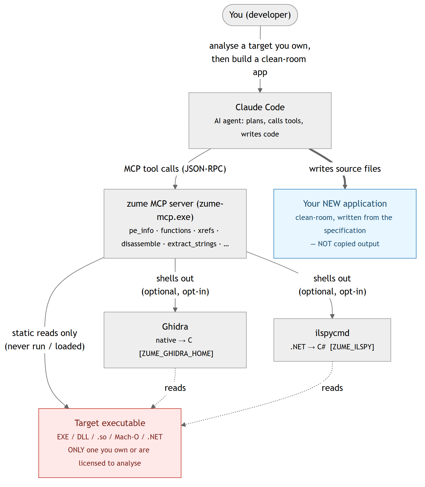

MCP（AI 集成）¶
Zume Editor 附带一个独立的程序 zume-mcp，它充当
MCP（Model Context Protocol）服务器。兼容的 AI 客户端（例如 Claude
Desktop 或 Claude Code）会启动它，随后便可读取、创建和编辑文件，
查询你在应用中配置的数据库，并使用你保存在应用内的 API 密钥通过 HTTPS
访问外部服务——全部都经由编辑器自身的、经过测试的引擎完成。
zume-mcp 通过 stdio（标准输入 / 输出）使用 JSON-RPC 2.0 通信——它没有
窗口，也不会自行开放任何网络端口。它随应用一同安装（在 Windows 上位于
可执行文件旁边，在 Linux 上位于 bin/，在 macOS 上位于应用文件夹内部）。
设置方法¶
MCP 客户端以命令的形式启动服务器。将其指向 zume-mcp：
将 ZIP 解压到一个你会保留的文件夹，并使用
zume-mcp.exe 的完整路径作为命令：
{
"mcpServers": {
"zume": { "command": "C:\\Tools\\Zume\\zume-mcp.exe", "args": [] }
}
}
Store（MSIX）软件包会注册一个应用执行别名，因此安装后
你可以直接使用裸名称 zume-mcp —— 无需路径：
{
"mcpServers": {
"zume": { "command": "zume-mcp", "args": [] }
}
}
（该别名位于你的 PATH 中的
%LOCALAPPDATA%\Microsoft\WindowsApps 下，因此它在多次更新后依然有效。
zume-cli 也以同样的方式设置了别名。）
使用应用文件夹内部 zume-mcp 的完整路径（macOS），或已安装的
bin/zume-mcp（Linux）：
{
"mcpServers": {
"zume": { "command": "/Applications/Zume Editor.app/Contents/MacOS/zume-mcp", "args": [] }
}
}
在服务器条目中添加一个 env 块以开启可选工具，并限定服务器可触及的范围
——参见下文的环境变量和
限制 AI 可触及的范围。
环境变量¶
每一项可选能力在你用服务器 env 块中的环境变量开启之前都是关闭的。
这些外部工具均未捆绑——你需自行安装并让变量指向它们。
| 变量 | 它开启什么 | 示例值 |
|---|---|---|
ZUME_GHIDRA_HOME |
decompile 工具——通过本地 Ghidra headless 安装进行原生（C）反编译。需要 JDK（JAVA_HOME）。 |
C:\ghidra_12.1.4_PUBLIC |
JAVA_HOME |
Ghidra（及 CFR）运行所依赖的 JDK。当无法自动找到 JDK 时设置它。 | C:\Program Files\Eclipse Adoptium\jdk-25.0.4.101-hotspot |
ZUME_ILSPY |
il_types / il_decompile 工具（.NET / 托管）。ilspycmd 的路径，或填 1 让其在 PATH 中查找。 |
1 |
ZUME_ILSPY_CACHE |
ILSpy 结果的缓存位置（可选；加快重复反编译）。 | C:\Tools\zume\ilspy-cache |
ZUME_CFR |
java_decompile 工具（Java → 源代码）——你下载的 CFR .jar 的路径。（javap 字节码模式不需要 CFR。） |
C:\Tools\cfr\cfr-0.152.jar |
ZUME_CFR_CACHE |
CFR 结果的缓存位置（可选）。 | C:\Tools\zume\cfr-cache |
ZUME_ANALYZER_TOOLS |
analyze_run 工具——外部安全分析器，以 name = command 行的形式（参见外部安全分析器）。 |
见下文 |
ZUME_MCP_ROOTS / ZUME_MCP_READONLY |
为服务器设置沙箱——限制 AI 可触及的范围。 | — |
ZUME_ANALYZER_TOOLS 每行接受一个 name = command 条目（在 JSON 中换行
写作 \n）；{target} 是你传入的范围或文件，{out} 是工具写入其 JSON
结果的路径。一个完整的 env 块——此处开启了
Ghidra、ILSpy、CFR 和 sanctum
分析器（请将路径替换为你自己的）：
{
"mcpServers": {
"zume": {
"type": "stdio",
"command": "C:\\Tools\\zume\\zume-mcp.exe",
"args": [],
"env": {
"ZUME_GHIDRA_HOME": "C:\\ghidra_12.1.4_PUBLIC",
"JAVA_HOME": "C:\\Program Files\\Eclipse Adoptium\\jdk-25.0.4.101-hotspot",
"ZUME_ILSPY": "1",
"ZUME_ILSPY_CACHE": "C:\\Tools\\zume\\ilspy-cache",
"ZUME_CFR": "C:\\Tools\\cfr\\cfr-0.152.jar",
"ZUME_ANALYZER_TOOLS": "recon = sanctum --scope \"{target}\" --json \"{out}\" --i-am-authorized\nfile = sanctum --file \"{target}\" --json \"{out}\"\nweb = sanctum --web \"{target}\" --crawl --active --i-am-authorized --json \"{out}\""
}
}
}
}
对每个可执行文件使用完整路径（例如 C:\\Tools\\sanctum\\sanctum.exe），
除非它已在你的 PATH 中。在 macOS / Linux 上同样的键适用于 POSIX 路径。
工具¶
文件、文本、十六进制、搜索、差异比较（本地磁盘）：
| 工具 | 它的作用 |
|---|---|
read_file_range |
读取文件的有界字节范围（可用于超大文件） |
file_info |
文件是否存在、其字节大小，以及识别出的类型（格式、MIME、类别） |
identify |
从文件内容（魔数签名）识别其类型：格式、MIME、类别、置信度、容器（docx / epub / jar / apk …），以及对于文档 / 图像的 creator（从 PDF / EXIF / PNG / OOXML / ODF 元数据读取的生产者 / 创建者）。有界读取；接受 path 或内联 text |
write_file |
创建新文件，或覆盖 / 追加已有文件（文本或十六进制） |
search_in_file |
字面量或正则搜索；返回带偏移 / 行号的匹配项 |
extract_strings |
可打印 ASCII 串及其字节偏移 |
hex_dump |
字节范围的十六进制 + ASCII 转储 |
find_bytes |
十六进制字节模式的每个偏移（前 64 MiB） |
patch_bytes |
在已有文件的某偏移处覆写字节 |
replace_in_file |
替换已有文件中的所有字面量 / 正则匹配并保存 |
detect_encoding |
文件的文本编码和行尾 |
diff_files |
两个文件的行差异（每个 hunk 的添加 / 删除行） |
search_in_files |
对某目录下的每个文本文件进行字面量或正则搜索 |
replace_in_files |
跨目录替换；默认预览，在一个事务中应用 |
search_large_file |
对任意大小的文件进行流式搜索（字节偏移 + 预览） |
compare_folders |
比较两个目录树（相同 / 不同 / 仅左侧 / 仅右侧） |
list_symbols |
源文件的定义（函数、类型……）及其行号 |
markdown_to_html |
将 Markdown（GFM 表格、内联格式）渲染为 HTML 文档 |
地图数据、转换、归档、补丁、脚本：
| 工具 | 它的作用 |
|---|---|
geo_convert |
在 GeoJSON / WKT / KML / GPX / CSV 之间转换地图数据 |
geo_measure |
GeoJSON 或 WKT 文档的大地测量长度（m）/ 面积（m²） |
geo_point |
geohash、地图瓦片 + quadkey + bbox、日本平面直角坐标系、DMS ⇄ 十进制 |
geo_reproject |
在 EPSG CRS 之间重新投影 GeoJSON（PROJ） |
convert_list / convert_run |
列出 / 运行文件转换工具箱（base64、JSON ⇄ CSV、时间戳……） |
archive_list / archive_extract / archive_create |
列出、提取或创建 zip / tar / 7z 归档 |
patch_bin |
应用或创建二进制补丁（IPS / BPS / UPS / bsdiff / VCDIFF） |
run_script |
对文件运行沙箱化的 Lua 脚本（预览，或以 save 写回） |
安全分析（二进制分流 / 变换 / 签名）：
| 工具 | 它的作用 |
|---|---|
entropy |
香农熵（总体 + 滑动窗口 sparkline）和字节直方图——发现打包 / 加密区域 |
transform |
CyberChef 风格的配方：XOR / ROT / RC4 / base58·85 / hex + 转换工具箱，在一条流水线中组合（对含糊的裸 xor:/rc4: 密钥返回 warnings；strict: true 则拒绝此类密钥） |
yara_scan |
使用实用的 YARA 规则子集扫描文件、目录或内联字节 |
pe_info |
Windows EXE / DLL（PE32 / PE32+）的结构：机器类型、子系统、时间戳、链接器、ASLR / DEP / CFG 标志、.NET 和 Authenticode 的存在情况、带熵的节、导入（含延迟加载）和导出（含转发器）、带版本字符串的资源树、字符串表、对话框标题 + 控件、菜单项和清单、PDB 路径、MSVC Rich header（带校验和标志的构建来源 @comp.id 条目），以及任何 overlay。仅结构——不含反汇编 |
elf_info |
ELF 可执行文件 / 共享对象（ELF32 / ELF64，任一字节序）的结构：类型、机器类型、入口、解释器、带熵的段和节、动态节（所需库、soname、rpath / runpath）、带版本的导入 / 导出符号、GNU build id 和加固措施（PIE、NX stack、RELRO、栈金丝雀、FORTIFY） |
macho_info |
Mach-O 映像或 fat / universal 二进制（列出每个 slice，slice 选取其一）的结构：CPU、文件类型、header 标志、每条 load command、带熵的段 / 节、带版本的 dylib、rpath、UUID、平台 / 最低 OS / SDK、入口、导入 / 导出符号、代码签名和加密的存在情况 |
decompile |
使用本地 Ghidra 通过其 headless 运行器，将 PE / ELF / Mach-O 的某个函数（或整个文件，有上限）反编译为 C。除非 ZUME_GHIDRA_HOME 指向某个 Ghidra 安装，否则关闭（Ghidra 未捆绑且需要 JDK）。返回每个函数的名称、地址、签名和 C；address / symbol 选取其一（传入来自 functions / xrefs 的偏移）。结果会被缓存。Ghidra 对目标做静态分析；生成的 C 是衍生物，因此只复用许可证允许的部分。托管（.NET） 目标会被路由到 il_decompile |
il_types |
通过本地 ILSpy（ilspycmd）给出 .NET / 托管程序集的类型清单（命名空间、类型名、种类）——functions 的托管对应物。除非设置了 ZUME_ILSPY（ilspycmd 的路径，或填 1 让其在 PATH 中查找），否则关闭。仅静态；反编译出的 IL 接近源代码，因此只复用许可证允许的部分 |
il_decompile |
将单个 .NET 类型反编译为 C#（或用 il 反编译为 IL），或用 out_dir 将整个程序集展开为 .csproj 项目，通过 ILSpy 完成。除非设置了 ZUME_ILSPY，否则关闭。传入 type（来自 il_types）或 out_dir；过长的结果会溢出到文件中。结果会被缓存（ZUME_ILSPY_CACHE） |
java_types |
通过 JDK 的 jar / javap 给出 Java .class / .jar 的类清单——functions 的 Java 对应物。需要 JDK（JAVA_HOME / PATH）。仅读取类文件 |
java_decompile |
通过用户提供的 CFR（将 ZUME_CFR 设为某个 cfr.jar）将单个 Java 类反编译为源代码，或通过 javap 反编译为 JVM 字节码（bytecode: true，不需要 CFR），或用 out_dir 将整个 jar 展开为源代码树。对 .jar 传入 class（来自 java_types）。decompile 会将 Java 目标指向此处。结果会被缓存（ZUME_CFR_CACHE） |
functions |
PE / ELF / Mach-O 的函数边界和调用图：每个函数的地址 / 文件偏移 / 大小及其发现方式、它调用的导入 / 符号 / 函数（带计数）、它加载的字符串、数据引用以及调用它的函数；可用 target（名称、sub_<hex>、entry 或地址）缩小范围。静态且基于启发式 |
xrefs |
PE / ELF / Mach-O 的静态交叉引用：解码每个可执行节，并将指令使用的每个地址分类为导入（PE IAT 槽，dll!function）、导出 / 命名符号、PLT / stub、字符串（含其文本）、另一个代码地址或数据；给出每个目标的汇总以及引用指令，可用 target（名称、字符串片段或地址）缩小范围。仅静态 |
disassemble |
对文件的某字节范围或内联十六进制字节生成 Capstone 列表（x86 16/32/64、ARM、Thumb、AArch64）。对 PE / ELF / Mach-O，其架构、起点（入口点，或 symbol 命名的导出）和虚拟地址取自 header，因此 pe_info / elf_info / macho_info 报告的偏移可直接传入；原始字节需要 arch。仅解码器：不加载、不执行、不反编译任何内容 |
数据库（在应用中配置的连接，或一个 SQLite 文件）：
| 工具 | 它的作用 |
|---|---|
db_list_connections |
列出已保存的 SQL 连接（仅名称；不含密码） |
db_schema |
列出某连接的表 / 视图及其列 |
db_query |
在某连接上运行 SQL 并返回结果行 |
nosql_list_connections |
列出已保存的 Redis / MongoDB 连接（按名称） |
nosql_command |
运行 Redis / MongoDB 命令并以 JSON 返回结果 |
Git（本地仓库，只读）：
| 工具 | 它的作用 |
|---|---|
git_status |
当前分支以及已暂存 / 未暂存的更改 |
git_log |
提交历史（id、摘要、作者、时间），最新在前 |
git_branches |
本地分支，含当前分支以及领先 / 落后情况 |
git_diff |
单个文件的差异（已暂存或未暂存的那一半） |
远程文件（FTP / FTPS / SFTP）（在应用中配置的连接）：
| 工具 | 它的作用 |
|---|---|
remote_list_connections |
列出已保存的 FTP / FTPS / SFTP 连接（按名称） |
remote_ls |
列出远程目录 |
remote_get |
下载远程文件（到本地文件，或返回其内容） |
remote_put |
将本地文件或内联文本上传到远程路径 |
remote_delete |
删除远程文件或空目录 |
remote_rename |
重命名 / 移动远程文件 |
remote_mkdir |
创建远程目录 |
云存储（你在应用中或通过 zume-cli 登录的账户）：
| 工具 | 它的作用 |
|---|---|
cloud_ls |
列出 Dropbox / Google Drive / OneDrive / Box 上的某个文件夹 |
cloud_get |
从已连接的云账户下载文件 |
cloud_put |
将本地文件或内联文本上传到云账户 |
Gen-AI 枢纽：
| 工具 | 它的作用 |
|---|---|
list_credentials |
列出本地存储的 API 密钥的名称 |
http_request |
向任意 API 发起 HTTPS 请求，可选择用存储的密钥进行认证 |
限制 AI 可触及的范围（沙箱）¶
在 zume-mcp 进程上设置的两个环境变量，可限定文件工具的可操作范围。
两者皆可选——如果都不设置，工具拥有完全访问权限（默认）。在你的 MCP
客户端的服务器配置（一个 env 块）中设置它们，以约束某个代理。
| 变量 | 作用 |
|---|---|
ZUME_MCP_ROOTS |
允许的目录列表（Windows 上以 ; 分隔，其他平台以 : 分隔）。除非工具的路径位于其中某个文件夹内，否则该工具会被拒绝。符号链接和 .. 会先被解析，因此路径无法逃逸。 |
ZUME_MCP_READONLY |
1 / true / yes / on 会使服务器变为只读：凡是会更改文件的工具（write、patch、replace、extract、create、upload，以及带 save 的 run_script）都会被拒绝。读取仍然有效。 |
{
"mcpServers": {
"zume": {
"command": "C:\\Tools\\Zume\\zume-mcp.exe",
"env": { "ZUME_MCP_ROOTS": "C:\\work\\project", "ZUME_MCP_READONLY": "1" }
}
}
}
被拒绝的请求会以普通的工具错误形式返回，而非崩溃。沙箱涵盖本地文件工具；
数据库、远程文件、云和 http_request 工具各有其自身规则（已保存的连接、
只读数据库配置、仅 HTTPS）。
AI 能做什么、不能做什么¶
AI 仅通过上述工具行动。
它能够：
- 读取和检查你的账户可以读取的任何文件——文本、日志、二进制。
- 创建、覆盖、追加和按字节打补丁文件（
write_file、replace_in_file、patch_bytes）。这些是真实的写入操作。 - 查询你的数据库。 它可以列出你在应用中配置的 SQL 连接
（
db_list_connections）、检查某个 schema（db_schema）并运行 SQL （db_query）——针对已保存的按名称指定的连接，或按路径指定的 SQLite 文件。 密码来自操作系统凭据存储，绝不会展示给 AI。 - 通过 FTP / FTPS / SFTP 操作远程文件，使用你在应用中配置的连接
（
remote_ls/remote_get/remote_put/remote_delete/remote_rename/remote_mkdir）。密码来自操作系统 凭据存储。对于 SFTP，服务器的主机密钥必须已被信任 （在编辑器中连接一次）；未知或已更改的密钥会被拒绝，因为无法在无界面 的情况下确认指纹。 - 通过 HTTPS 发送和获取数据（
http_request， GET/POST/PUT/PATCH/DELETE/HEAD），使用你在本地存储的 API 密钥进行认证， 按名称引用（密钥由zume-mcp注入，绝不会返回给 AI）。
它不能（这是设计使然）：
- 打开一个应用未曾配置过的直接数据库连接——
db_query只使用你已保存的连接或你提供的 SQLite 路径。 - 通过非 SQL 路径访问数据库——
http_request用于 HTTPS API； 数据库工具使用编辑器的 SQL 引擎（SQLite、MySQL / MariaDB、PostgreSQL、 SQL Server）。 - 使用专门的云盘工具——云端上传 / 下载通过
zume-cli cloud命令或编辑器的 CloudDrive 浏览器完成，或通过http_request调用 提供商的 HTTPS API。 - 访问
http://、回环或本地网络 URL——仅允许https://。
设置¶
将你的 MCP 客户端指向 zume-mcp 命令。对于使用 JSON 配置的客户端
（例如 Claude Desktop）：
{
"mcpServers": {
"zume-editor": {
"command": "zume-mcp"
}
}
}
在 Windows 上，如果 zume-mcp 不在你的 PATH 中，请使用完整路径，例如
"command": "C:\\Program Files\\Zume Editor\\zume-mcp.exe"。
Microsoft Store（MSIX）构建
Microsoft Store 构建无法用作 MCP 服务器。它的
zume-mcp 安装在受保护的
C:\Program Files\WindowsApps\… 文件夹下——这是一个随每次更新而变化、
且不在你 PATH 中的版本专属路径——因此 MCP 客户端无法启动它。
要在 Windows 上运行 MCP 服务器（或 CLI），
请安装便携版 ZIP（或安装程序构建），将其解压到一个稳定的文件夹，
并将你的客户端指向那个 zume-mcp.exe，例如：
{ "mcpServers": { "zume": { "command": "C:\\Tools\\Zume\\zume-mcp.exe" } } }
使用 Claude Code CLI：
claude mcp add zume -s user -- "C:\Tools\Zume\zume-mcp.exe"
数据库工具读取你在应用的 Database 工作区中设置的连接。
用 zume-cli aikey set <name> 存储用于 http_request 的 API 密钥
（参见 CLI）；AI 用 list_credentials 列出它们。
业务工作流示例¶
每个示例都是你向 AI 发出的一个请求；它会自行串联各工具。
1. 跨代码库查找并修复
“找出
src下仍然调用legacy_init(的每个文件，并将其改为init(。”
使用 search_in_file + replace_in_file。
2. 将数据库表导出为 CSV
“连接到
reporting数据库，并将本月的orders导出到orders.csv。”
AI 在你已保存的 reporting 连接上调用 db_query（密码取自
凭据存储），然后用 write_file 创建含这些行的 orders.csv。
你在应用中标记为只读的连接会拒绝读取查询以外的任何操作。
3. 用 Web API 丰富文件
“对
orders.csv中的每一行，从我们的 REST API 查询状态并将结果写入orders_enriched.csv。”
AI 读取文件，用 http_request 调用你的 API（使用存储的密钥认证），
并用 write_file 写入一个新文件。
4. 将文件上传到云盘
“将
report.pdf上传到我的 Dropbox/reports文件夹。”
AI 读取文件，并用存储的令牌对 Dropbox 内容 API 发起 http_request。
（如需交互式浏览，请使用 zume-cli cloud
或编辑器的 CloudDrive。）
5. 使用托管密钥调用外部 LLM / API
“用 OpenAI 总结
notes.md，并将摘要保存为summary.md。”
一次性存储密钥（zume-cli aikey set openai）；AI 用
http_request 调用 LLM 并用 write_file 写入结果。密钥值保留在
你的本地凭据存储中，绝不会展示给 AI。
6. 在服务器上处理文件
“从
stagingSFTP 连接下载/var/log/app.log，找出其中的 错误，并将清理后的副本作为/var/log/app.clean.log上传回去。”
AI 用 remote_get 下载（通过你已保存的 staging 连接），
处理文本，再用 remote_put 上传结果。staging 主机
必须已在编辑器中被信任（SFTP）。
让 AI 编写 Lua 脚本（定制编辑器）¶
一个强大的模式：让 AI 为重复性编辑编写一个 Zume Lua 脚本， 然后在编辑器中运行它。
“编写一个 Zume Lua 脚本，用于对齐选中行中的
=号，并将其 保存为align_equals.lua。”
AI 用 zume API 起草脚本，并用 write_file 创建 align_equals.lua。
随后你用 Script → Run Lua File 运行它，并与 AI 迭代
直到它完全符合你的期望。
Note
zume-mcp 不执行 Lua——执行由编辑器完成，在那里每次编辑
都可撤销——因此你自己审查并运行脚本。这让你保持掌控，
同时仍然让 AI 为你扩展编辑器。
为应用开发做逆向工程¶
静态分析工具（pe_info / elf_info / macho_info、
extract_strings、functions、xrefs、disassemble，以及可选的
decompile / il_types / il_decompile）让 AI 代理能够研究现有
程序，并帮助你构建具有类似行为的你自己的应用——
这正是人类逆向工程师采用的同一套 清点 → 定位 → 阅读 → 规约 → 重实现 工作流。
仅对你有权分析的软件使用——你对自己的成果负责
仅对那些其许可证 / EULA 允许逆向工程并且你有权分析的 可执行文件运行这些工具——你自己的构建、开源二进制， 或条款明确允许的软件。许多商业 EULA 禁止逆向工程； 分析此类软件可能违反该合同或适用法律。确认你拥有该权利 是你的责任。
反编译和反汇编的输出是原件的衍生物。请以净室（clean-room） 方式构建你的应用：依据你自己产出的书面行为规约工作， 而不是把生成的 C / C# / IL / 汇编复制到你的代码中。
免责。 你用此功能创建的任何东西完全由你自己负责。 在法律允许的最大范围内，Zume 的作者和分发者对此功能的 使用方式或由其产出的任何东西概不承担任何责任。
各部分如何协同¶

Zume、Ghidra 和 ilspycmd 只对目标做静态读取——它绝不会被执行
或加载。Ghidra 和 ilspycmd 未捆绑；只有在你安装它们并设置
ZUME_GHIDRA_HOME / ZUME_ILSPY 后它们才会运行。
面向 Claude Code 的示例提示词¶
将此粘贴到已连接 zume MCP 服务器的 Claude Code 会话中， 替换目标路径和你想要的功能：
You have the zume MCP server connected (static binary-analysis tools).
Target: C:\path\to\target.exe — I confirm I have the right to analyse this
binary (my own build / OSS / a licence that permits reverse engineering).
Work clean-room: produce a behavioural specification and reimplement from it;
do NOT copy decompiled C/C#/IL or disassembly into the new code.
Do this step by step, reporting findings at each stage:
1. Inventory: run pe_info (or elf_info / macho_info) and extract_strings.
Summarise the feature set, the OS/library APIs it uses, the file formats,
URLs and error messages, and the UI (dialogs / menus). If pe_info reports
managed: true, it is a .NET assembly — use il_types instead of functions.
2. Locate: I want to reimplement this feature: <describe the feature>. Use
extract_strings / search_in_file to find related strings, then functions
and xrefs (or il_types) to find the functions/types that use them.
3. Read: for the key functions, use disassemble at the offsets functions /
xrefs reported; optionally decompile (native) or il_decompile (.NET) a
specific function/type. Explain inputs, outputs, side effects and errors.
4. Specify: write a precise behavioural specification (inputs, outputs,
formats, edge cases, error conditions) — observed behaviour only.
5. Reimplement: from that specification alone, implement the feature as new
code in <your language/project>, clean-room. Note anything you could not
determine statically (it may need runtime observation, which these tools
do not do).
Keep everything static — never run or load the target. Flag any licensing
concern if the binary embeds third-party libraries whose reimplementation
their licence restricts.
代理在每一步都会报告；你保留行为规约和 新代码，并丢弃原始的反编译器 / 反汇编器输出。
使用注意事项与警示¶
部分工具会更改磁盘上的文件
write_file、patch_bytes 和 replace_in_file 会创建、覆盖或
修改文件，而且这些写入从 MCP 一侧是不可撤销的
（不同于在编辑器窗口中所做的编辑）。只让 AI 在你信任的文件夹中工作，
并保留备份或使用版本控制。
数据库、远程和网络访问以你的身份代为行事
db_query 可以读取、并（除非该连接为只读）写入你
配置的数据库；remote_* 工具可以读取、上传、删除和
重命名你配置的 FTP / SFTP 服务器上的文件；http_request 可以向
任意 HTTPS 端点发送数据并从中获取数据，使用你存储的密钥。
密码和密钥值绝不会到达 AI，但这些操作以你的凭据运行。
只配置你希望可被触及的连接和密钥，仅将 MCP 连接到你信任的客户端，
并审查 AI 的所作所为。
- 它以你的权限运行。
zume-mcp能读写你的用户账户所能读写的 任何文件，并能访问你配置的任何数据库。 - 仅 HTTPS，响应体有上限。
http_request拒绝非https://的 URL， 且响应体在 1 MiB 处被截断（通过body_truncated报告）。